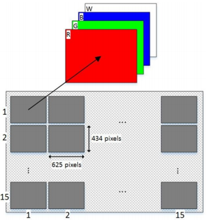
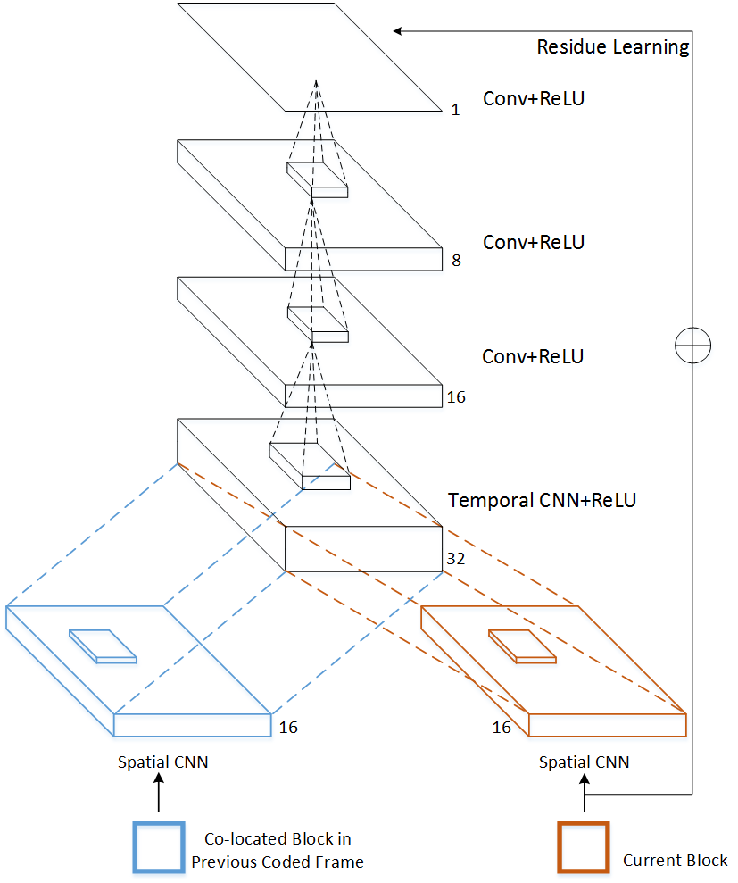
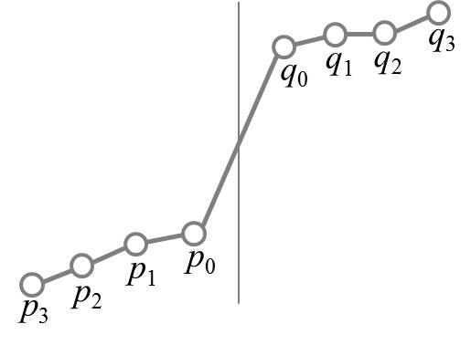
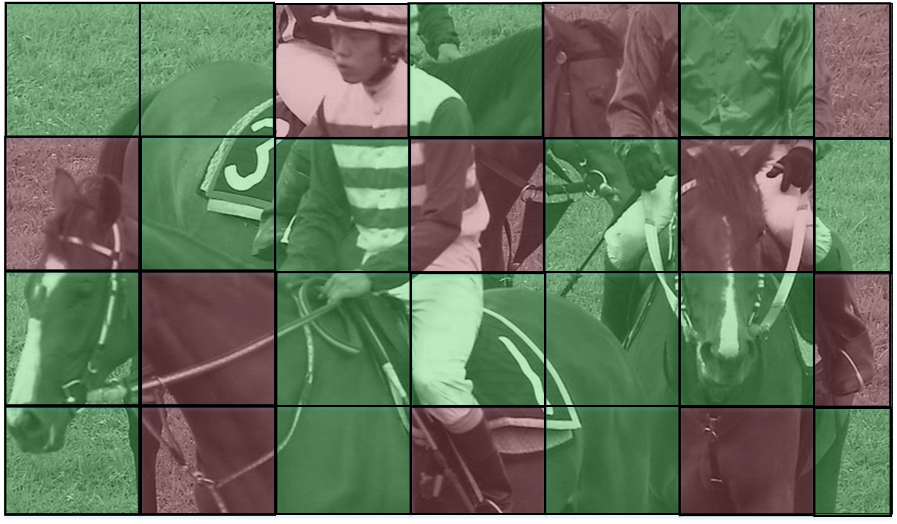

Light Field Image Compression with Optimized Inter Prediction

Light field (LF) attracts tremendous attention due to its capability of recording the intensity of scene objects as well as the directionof the light ray, which also dramatically increases the amount of redundant data. In this paper, we explore the structure of the light field images, and propose a pseudo-sequence based light field image compression with sub-aperture re-arrangement and adaptive restoration to efficiently improve the coding performances.
 Project Page
Project Page
Spatial-temporal Resiudel Network for Future Video Coding

Deep learning has demonstrated tremendous break through in the area of image/video processing. In this paper, a spatial-temporal residue network (STResNet) based in-loop filter is proposed to suppress visual artifacts such as blocking, ringing in video coding. Specifically, the spatial and temporal information is jointly exploited by taking both current block and co-located block in reference frame into consideration during the processing of in-loop filter.
Project Page
Non-local Structure in-Loop Filter for HEVC

To enhance the quality of the deblocking frames, a non-local structure-based filter (NLSF) is proposed by simultaneously enforcing the intrinsic local sparsity and the non-local self-similarity of each frame in video. NLSF not only deals with the boundaries, but also deals with the inside areas, which is able to effectively reduce the artifacts while enhance quality of the deblocking frames.
Project Page
Content-Aware CNN for In-loop Filtering in HEVC

We provide the training data for single CNN model training. For more information, please refere to readme.md in the download file. (Click the link below to download the training data.)
Project Page